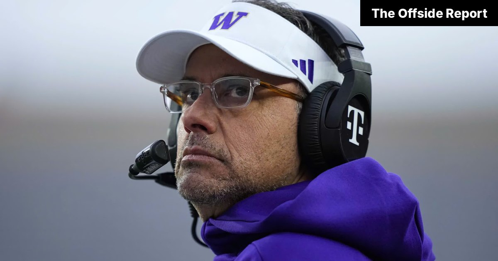

Jedd Fisch expected to be a top USMNT target as U.S. Soccer makes contact with Washington coach
The federation’s search committee says it wants “a proven leader of men in headsets.”

U.S. Soccer has made contact with Washington football coach Jedd Fisch about the men’s national team job, according to sources who also admitted they do not fully understand either sport.
The federation’s interest reportedly began after a search committee member watched Fisch call a timeout and asked why soccer coaches aren’t allowed to do that. Nobody on the call had a good answer.
People briefed on the early conversations say Fisch asked whether he could bring his offensive coordinator, install a two-minute drill and “at least try” a forward pass. U.S. Soccer officials said they were open to all three, pending a review of the Laws of the Game.
Fisch would face a learning curve. Sources say his first proposed formation featured 11 players, which officials described as “a very encouraging start,” and a punter, which they described as “something we’ll circle back on.”
Huskies fans, for their part, have been reassured that Fisch is not going anywhere. The federation’s backup plan is reportedly to hire whoever designed Husky Stadium’s visor.